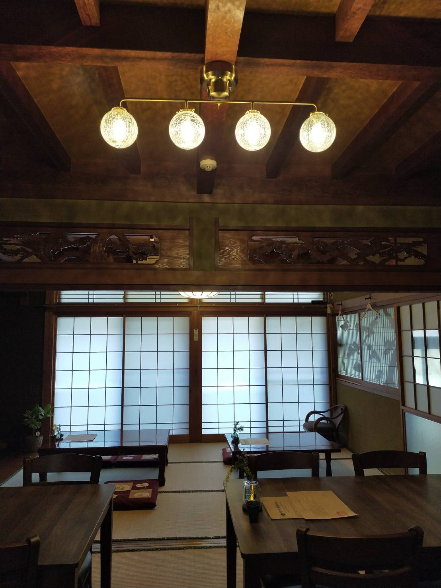

長崎県平戸市、生月島の静かな入り江。
古い民家を整え、木の温もりを感じる空間を作りました。
日常の喧騒を離れ、波の音や風を感じながら
ゆっくりと一杯の珈琲をお楽しみください。
長崎県平戸市、生月島の静かな入り江。
古い民家を整え、木の温もりを感じる空間を作りました。
日常の喧騒を離れ、波の音や風を感じながら
ゆっくりと一杯の珈琲をお楽しみください。

住所：長崎県平戸市生月町壱部浦２６０
営業日：水・土・日曜日
営業時間：11:00 〜 16:00